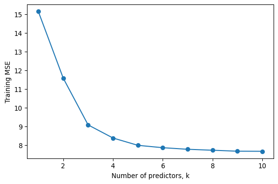
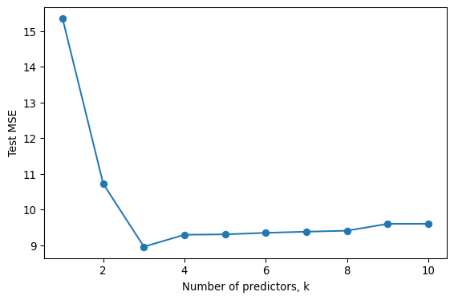
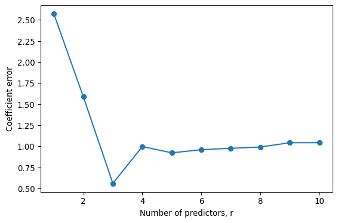

a, y1 = 2, 3
X = np.array([[a, a], [-a, -a]])
y = np.array([y1, -y1])
lam = 1
print(np.linalg.solve(X.T @ X + lam * np.eye(2), X.T @ y))
print(2 * a * y1 / (4 * a**2 + lam))[0.70588235 0.70588235]
0.7058823529411765STA 363 | Instructor copy
At \(\lambda = 0\) the ridge estimate is the least squares estimate. As \(\lambda\) grows the penalty pulls every \(\hat\beta_j\) toward zero, and as \(\lambda \rightarrow \infty\) the fit approaches the null model that predicts \(\bar{y}\) for everyone.
(a) (3) Steadily increase. Least squares minimizes the training RSS, so any other coefficient vector has training RSS at least as large. Raising \(\lambda\) moves the coefficients further from the least squares solution, toward the intercept-only fit, so training RSS rises steadily from the least squares RSS up to the total sum of squares.
(b) (2) Decrease at first and then increase, in a U shape. For small \(\lambda\) the shrinkage removes a lot of variance at little cost in bias, so test RSS falls. Past some point the coefficients are shrunk too far, bias dominates, and test RSS rises toward the null model’s test RSS. (If least squares already happens to be optimal, the curve can rise from the start, but the U is the typical shape and the one in ISLP Figure 6.5.)
(c) (4) Steadily decrease. From lecture,
\[\text{Var}(\hat\beta^R) = \sigma^2(\mathbf{X}^T\mathbf{X} + \lambda\mathbf{I})^{-1}\mathbf{X}^T\mathbf{X}(\mathbf{X}^T\mathbf{X} + \lambda\mathbf{I})^{-1}.\]
At \(\lambda = 0\) this reduces to \(\sigma^2(\mathbf{X}^T\mathbf{X})^{-1}\), the least squares variance. As \(\lambda\) grows, the \((\mathbf{X}^T\mathbf{X} + \lambda\mathbf{I})^{-1}\) factor on each side gets smaller, and as \(\lambda \rightarrow \infty\) the whole expression goes to zero. In terms of the eigenvalues \(d_j\) of \(\mathbf{X}^T\mathbf{X}\), the variance in each eigen-direction is \(\sigma^2 d_j / (d_j + \lambda)^2\), which decreases in \(\lambda\) for every \(j\). A full answer only needs the argument that adding \(\lambda\) to the diagonal inflates the matrix being inverted twice and leaves the middle term fixed.
(d) (3) Steadily increase. From lecture, \(\text{Bias}(\hat\beta^R) = -\lambda(\mathbf{X}^T\mathbf{X} + \lambda\mathbf{I})^{-1}\beta\), which is zero at \(\lambda = 0\) and approaches \(-\beta\) as \(\lambda \rightarrow \infty\). The fit moves steadily from the unbiased least squares fit to the null model, so the squared bias grows steadily.
(e) (5) Remain constant. The irreducible error is \(\text{Var}(\varepsilon)\), a property of the data-generating process. No choice of model or of \(\lambda\) changes it.
(f) Ridge regression is less flexible than least squares. “Ridge regression will give better prediction accuracy than least squares when its increase in bias is less than its decrease in variance.” Part c shows that the variance falls as \(\lambda\) grows, and part d shows that the price is a rise in squared bias. Test MSE is the sum of the two (plus the constant from part e), so ridge wins exactly when the variance it removes outweighs the bias it adds. This happens most often when least squares has high variance: many predictors relative to \(n\), or highly correlated predictors.
(a) With the intercept dropped, the ridge problem is to minimize
\[\left(y_1 - a\beta_1 - a\beta_2\right)^2 + \left(-y_1 + a\beta_1 + a\beta_2\right)^2 + \lambda\left(\beta_1^2 + \beta_2^2\right)\]
over \(\beta_1\) and \(\beta_2\). The two squared terms are equal, so this is
\[2\left(y_1 - a(\beta_1 + \beta_2)\right)^2 + \lambda\left(\beta_1^2 + \beta_2^2\right).\]
(b) The RSS term depends on \(\beta_1\) and \(\beta_2\) only through \(s = \beta_1 + \beta_2\). Fix \(s\). Among all pairs with that sum, the RSS is the same, so the minimizer is the pair that makes \(\beta_1^2 + \beta_2^2\) smallest. Writing \(\beta_1 = s/2 + t\) and \(\beta_2 = s/2 - t\),
\[\beta_1^2 + \beta_2^2 = \frac{s^2}{2} + 2t^2,\]
which is minimized at \(t = 0\), that is, \(\beta_1 = \beta_2 = s/2\). Whatever the optimal sum turns out to be, the ridge solution splits it evenly, so \(\hat\beta^R_1 = \hat\beta^R_2\). (For \(\lambda > 0\) the objective is strictly convex, so this minimizer is unique.)
(c) Set \(\beta_1 = \beta_2 = b\). The objective becomes
\[f(b) = 2\left(y_1 - 2ab\right)^2 + 2\lambda b^2.\]
Differentiating and setting to zero,
\[f'(b) = -8a\left(y_1 - 2ab\right) + 4\lambda b = 0 \quad\Longrightarrow\quad 8ay_1 = \left(16a^2 + 4\lambda\right)b,\]
so
\[\hat\beta^R_1 = \hat\beta^R_2 = \frac{2ay_1}{4a^2 + \lambda}.\]
(d) At \(\lambda = 0\) the objective is \(2\left(y_1 - a(\beta_1 + \beta_2)\right)^2\), which reaches its minimum of zero whenever
\[\beta_1 + \beta_2 = \frac{y_1}{a}.\]
That is a whole line in the \((\beta_1, \beta_2)\) plane, so least squares has infinitely many solutions: any pair on the line \(\beta_2 = y_1/a - \beta_1\) fits the data perfectly. As \(\lambda \rightarrow 0\) the answer to part c approaches \(2ay_1 / 4a^2 = y_1/(2a)\) for each coefficient. That point lies on the least squares line (the two values sum to \(y_1/a\)), and it is the point on the line closest to the origin. Ridge with a vanishing penalty picks out the minimum-norm least squares solution and splits the effect evenly between the two identical predictors.
(e)
a, y1 = 2, 3
X = np.array([[a, a], [-a, -a]])
y = np.array([y1, -y1])
lam = 1
print(np.linalg.solve(X.T @ X + lam * np.eye(2), X.T @ y))
print(2 * a * y1 / (4 * a**2 + lam))[0.70588235 0.70588235]
0.7058823529411765Both coefficients are \(12/17 \approx 0.706\), matching \(2ay_1/(4a^2 + \lambda) = 12/17\) from part c.
--------------------------------------------------------------------------- LinAlgError Traceback (most recent call last) Cell In[3], line 1 ----> 1 np.linalg.solve(X.T @ X, X.T @ y) File /opt/homebrew/lib/python3.13/site-packages/numpy/linalg/_linalg.py:410, in solve(a, b) 407 signature = 'DD->D' if isComplexType(t) else 'dd->d' 408 with errstate(call=_raise_linalgerror_singular, invalid='call', 409 over='ignore', divide='ignore', under='ignore'): --> 410 r = gufunc(a, b, signature=signature) 412 return wrap(r.astype(result_t, copy=False)) File /opt/homebrew/lib/python3.13/site-packages/numpy/linalg/_linalg.py:104, in _raise_linalgerror_singular(err, flag) 103 def _raise_linalgerror_singular(err, flag): --> 104 raise LinAlgError("Singular matrix") LinAlgError: Singular matrix
With \(\lambda = 0\), np.linalg.solve raises LinAlgError: Singular matrix. \(\mathbf{X}^T\mathbf{X} = \begin{pmatrix} 8 & 8 \\ 8 & 8 \end{pmatrix}\) has determinant zero because the two columns of \(\mathbf{X}\) are identical, so the normal equations have no unique solution, which is the algebraic version of part d. Adding \(\lambda\mathbf{I}\) makes the matrix invertible for any \(\lambda > 0\).
(a)
best = {}
for k in range(1, p + 1):
for cols in itertools.combinations(range(p), k):
cols = list(cols)
lm = LinearRegression().fit(X_train[:, cols], y_train)
mse = np.mean((y_train - lm.predict(X_train[:, cols])) ** 2)
if k not in best or mse < best[k]["train"]:
best[k] = {"cols": cols, "lm": lm, "train": mse}
sizes = list(best)
train_mse = [best[k]["train"] for k in sizes]
fig, ax = plt.subplots(figsize=(6, 4))
ax.plot(sizes, train_mse, marker="o")
ax.set_xlabel("Number of predictors, k")
ax.set_ylabel("Training MSE")
fig.tight_layout()
plt.show()
Training MSE falls with every added predictor, from about 15.1 at \(k = 1\) to about 7.7 at \(k = 10\). The drop is steep through \(k = 3\) and nearly flat after \(k = 5\). The best size \(k\) model always has training MSE at most that of the best size \(k - 1\) model, since adding a column to that model can only lower its RSS.
(b)
for k in sizes:
cols, lm = best[k]["cols"], best[k]["lm"]
best[k]["test"] = np.mean((y_test - lm.predict(X_test[:, cols])) ** 2)
test_mse = [best[k]["test"] for k in sizes]
fig, ax = plt.subplots(figsize=(6, 4))
ax.plot(sizes, test_mse, marker="o")
ax.set_xlabel("Number of predictors, k")
ax.set_ylabel("Test MSE")
fig.tight_layout()
plt.show()
Test MSE falls quickly to its minimum, about 8.96 at \(k = 3\), then rises slowly to about 9.60 at \(k = 10\). Past \(k = 3\) the extra predictors lower the training MSE but add variance on new data.
(c)
pd.DataFrame({
"k": sizes,
"predictors": [best[k]["cols"] for k in sizes],
"train": np.round(train_mse, 3),
"test": np.round(test_mse, 3),
})| k | predictors | train | test | |
|---|---|---|---|---|
| 0 | 1 | [0] | 15.145 | 15.350 |
| 1 | 2 | [0, 1] | 11.577 | 10.722 |
| 2 | 3 | [0, 1, 4] | 9.073 | 8.960 |
| 3 | 4 | [0, 1, 4, 5] | 8.371 | 9.295 |
| 4 | 5 | [0, 1, 4, 5, 7] | 7.980 | 9.306 |
| 5 | 6 | [0, 1, 3, 4, 5, 7] | 7.853 | 9.349 |
| 6 | 7 | [0, 1, 3, 4, 5, 7, 8] | 7.768 | 9.381 |
| 7 | 8 | [0, 1, 3, 4, 5, 7, 8, 9] | 7.717 | 9.409 |
| 8 | 9 | [0, 1, 3, 4, 5, 6, 7, 8, 9] | 7.665 | 9.601 |
| 9 | 10 | [0, 1, 2, 3, 4, 5, 6, 7, 8, 9] | 7.660 | 9.602 |
The test MSE is smallest at \(k = 3\). That model uses columns 0, 1 and 4 (the first, second and fifth predictors), with estimates of about 3.22, \(-2.02\) and 1.62, close to the true 3, \(-2\) and 1.5. It includes no null predictor, but it leaves out column 7, whose true coefficient is 0.5.
Column 7 is the hardest to pick up because its signal is small relative to the noise. Its coefficient of 0.5 contributes variance \(0.5^2 = 0.25\) to \(y\), against a noise variance of \(3^2 = 9\), so with only 100 training observations its estimated effect is on the same scale as the spurious effects of the null predictors. Best subset does add it at \(k = 5\) (estimate about 0.70), but only after it has already added null column 5, and including it does not lower the test MSE.
(d)
coef_err = []
for k in sizes:
beta_hat = np.zeros(p)
beta_hat[best[k]["cols"]] = best[k]["lm"].coef_
coef_err.append(np.sqrt(np.sum((beta - beta_hat) ** 2)))
fig, ax = plt.subplots(figsize=(6, 4))
ax.plot(sizes, coef_err, marker="o")
ax.set_xlabel("Number of predictors, r")
ax.set_ylabel("Coefficient error")
fig.tight_layout()
plt.show()
The coefficient error has the same overall shape as the test MSE in part b: a steep drop to its minimum (about 0.56) at \(r = 3\), then a rise and a plateau around 0.9 to 1.0 for the larger models. The shapes agree because, with independent standard normal predictors, the expected test MSE of a linear fit is \(\sigma^2 + \|\beta - \hat\beta\|_2^2\), so test error tracks how far the estimated coefficients are from the truth. The match is close but not exact: the coefficient error dips slightly at \(r = 5\) when column 7 enters, while the test MSE does not, because the test MSE is computed on a finite sample with predictors that are only approximately uncorrelated.
(e)
n_train = len(y_train)
sigma2 = best[p]["train"] * n_train / (n_train - p - 1)
crit = []
for k in sizes:
rss = best[k]["train"] * n_train
crit.append({
"k": k,
"Cp": (rss + 2 * k * sigma2) / n_train,
"BIC": (rss + np.log(n_train) * k * sigma2) / n_train,
})
crit = pd.DataFrame(crit).round(3)
crit| k | Cp | BIC | |
|---|---|---|---|
| 0 | 1 | 15.317 | 15.541 |
| 1 | 2 | 11.922 | 12.370 |
| 2 | 3 | 9.589 | 10.262 |
| 3 | 4 | 9.060 | 9.957 |
| 4 | 5 | 8.840 | 9.961 |
| 5 | 6 | 8.885 | 10.231 |
| 6 | 7 | 8.973 | 10.542 |
| 7 | 8 | 9.094 | 10.888 |
| 8 | 9 | 9.214 | 11.232 |
| 9 | 10 | 9.381 | 11.623 |
Here \(\hat\sigma^2 = \text{RSS}_{10}/(n - p - 1) = \text{RSS}_{10}/89\), from the model with all ten predictors. \(C_p\) is smallest at \(k = 5\) and BIC is smallest at \(k = 4\) (its values at \(k = 4\) and \(k = 5\) differ only in the third decimal). Both choose a larger model than the \(k = 3\) that minimizes test MSE, with BIC closer because its \(\log(100) \approx 4.6\) penalty per predictor is heavier than \(C_p\)’s penalty of 2. The test MSEs of the \(k = 4\) and \(k = 5\) models are about 9.30 and 9.31, compared with 8.96 at \(k = 3\), so the training-only criteria land close to the best model without matching it. Students may report a slightly different \(\hat\sigma^2\) (for example dividing by \(n - p\) or by \(n\)); the selected sizes should be the same or adjacent, and the comparison to part c is what matters.
Hitters = pd.read_csv(DATA + "Hitters.csv").dropna(subset=["Salary"])
y_hit = Hitters["Salary"]
X_hit = Hitters.drop(columns=["Salary"])
cat = ["League", "Division", "NewLeague"]
num = [c for c in X_hit.columns if c not in cat]
X_tr, X_te, y_tr, y_te = train_test_split(
X_hit, y_hit, train_size=50, random_state=363
)
cv = KFold(n_splits=10, shuffle=True, random_state=363)(a)
def make_pre():
return ColumnTransformer([
("num", StandardScaler(), num),
("cat", OneHotEncoder(drop="first"), cat),
])
ls = Pipeline([("pre", make_pre()), ("lm", LinearRegression())])
ls.fit(X_tr, y_tr)
ls_mse = np.mean((y_te - ls.predict(X_te)) ** 2)
null_mse = np.mean((y_te - y_tr.mean()) ** 2)
round(ls_mse), round(null_mse)(191476, 189306)Least squares has a test MSE of about 191,476. Predicting the training mean salary for every player gives about 189,306. With 50 training players, the full least squares model does slightly worse on new players than ignoring the predictors entirely.
(b)
ridge = Pipeline([("pre", make_pre()), ("ridge", Ridge())])
grid = GridSearchCV(
ridge,
{"ridge__alpha": np.logspace(-2, 5, 60)},
cv=cv,
scoring="neg_mean_squared_error",
)
grid.fit(X_tr, y_tr)
alpha = grid.best_params_["ridge__alpha"]
ridge_mse = np.mean((y_te - grid.predict(X_te)) ** 2)
round(alpha, 2), round(ridge_mse)(np.float64(20.99), 118739)Cross-validation chooses \(\alpha \approx 20.99\). GridSearchCV refits on the full training set at that value by default, and the refit model has a test MSE of about 118,739, roughly 38% lower than least squares and 37% lower than the null model.
(c)
After encoding, the design matrix has 19 columns (16 numeric and one dummy for each of the three binary categorical variables), plus the intercept, for 20 parameters estimated from 50 rows. Many of the numeric predictors are also highly correlated (career totals such as CAtBat, CHits and CRuns move together). With few rows per parameter and correlated columns, \(\mathbf{X}^T\mathbf{X}\) is close to singular, so the least squares coefficients have very high variance: they are unbiased, but they swing far from the truth from one training sample to the next, and the predictions on new players are poor. Ridge accepts some bias by shrinking the coefficients toward zero, and in return removes much of that variance. The test MSE drop from about 191,000 to about 119,000 says that here the decrease in variance is much larger than the increase in bias, as in Question 1f.
(d)
Z = grid.best_estimator_["pre"].transform(X_tr)
Z_c = Z - Z.mean(axis=0)
y_c = y_tr.to_numpy() - y_tr.mean()
beta_hand = np.linalg.solve(Z_c.T @ Z_c + alpha * np.eye(Z.shape[1]), Z_c.T @ y_c)
beta_sk = grid.best_estimator_["ridge"].coef_
np.max(np.abs(beta_hand - beta_sk))np.float64(1.3500311979441904e-13)The hand-computed coefficients match coef_ to numerical precision (the largest difference is on the order of \(10^{-13}\)). Centering is what makes the formula without an intercept column valid: Ridge leaves the intercept unpenalized, which is equivalent to centering every column and the response, solving the penalized normal equations, and then setting \(\hat\beta_0 = \bar{y} - \bar{\mathbf{x}}^T\hat\beta\). The dummy columns from OneHotEncoder are not centered by the preprocessor, so they need to be centered here as well. A student who forgets to center will get coefficients that do not match.
(e)
X_tr2, X_te2, y_tr2, y_te2 = train_test_split(
X_hit, y_hit, train_size=200, random_state=363
)
ls2 = Pipeline([("pre", make_pre()), ("lm", LinearRegression())])
ls2.fit(X_tr2, y_tr2)
ls2_mse = np.mean((y_te2 - ls2.predict(X_te2)) ** 2)
grid2 = GridSearchCV(
Pipeline([("pre", make_pre()), ("ridge", Ridge())]),
{"ridge__alpha": np.logspace(-2, 5, 60)},
cv=cv,
scoring="neg_mean_squared_error",
)
grid2.fit(X_tr2, y_tr2)
ridge2_mse = np.mean((y_te2 - grid2.predict(X_te2)) ** 2)
null2_mse = np.mean((y_te2 - y_tr2.mean()) ** 2)
round(ls2_mse), round(ridge2_mse), round(grid2.best_params_["ridge__alpha"], 2), round(null2_mse)(54420, 50531, np.float64(5.36), 133636)With 200 training players, least squares has a test MSE of about 54,420 and ridge (with \(\alpha \approx 5.36\)) about 50,531, against about 133,636 for the null model. The gap between the two shrinks from about 73,000 to about 4,000, and both now beat the null model by a wide margin. (The test sets differ between the two splits, so compare the gaps, not the raw MSEs.)
With four times as many rows for the same 20 parameters, the least squares coefficients are estimated much more precisely, so there is far less variance for ridge to remove. Cross-validation responds by choosing a smaller penalty, and the ridge fit moves closer to least squares. Ridge still helps a little, since the predictors remain correlated, but its advantage is largest when \(n\) is small relative to \(p\).